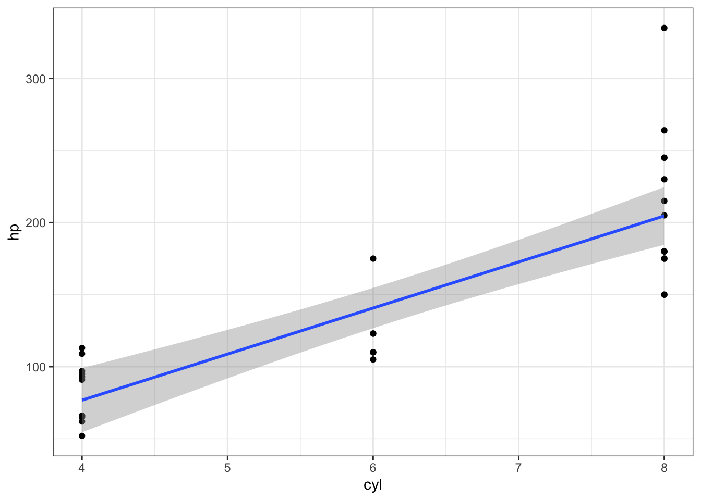

Day 2
BHV
2023-08-22
#Day 2
## ── Attaching core tidyverse packages ── tidyverse 2.0.0 ──
## ✔ dplyr 1.1.2 ✔ readr 2.1.4
## ✔ forcats 1.0.0 ✔ stringr 1.5.0
## ✔ ggplot2 3.4.3 ✔ tibble 3.2.1
## ✔ lubridate 1.9.2 ✔ tidyr 1.3.0
## ✔ purrr 1.0.2
## ── Conflicts ──────────────────── tidyverse_conflicts() ──
## ✖ dplyr::filter() masks stats::filter()
## ✖ dplyr::lag() masks stats::lag()
## ℹ Use the conflicted package (<http://conflicted.r-lib.org/>) to force all conflicts to become errorsNonsense
It’s hidden
mtcars %>% ggplot(aes(cyl, hp)) + geom_point() + geom_smooth(method = "lm") + theme_bw()## `geom_smooth()` using formula = 'y ~ x'
diamonds %>% ggplot(aes(carat, color, color = price)) + geom_point() + facet_wrap(~color, scales = "free_y")
diamonds %>% ggplot(aes(price, cut, color = color)) + geom_point()Exercises pt. 1
#Original code and output
ggplot(iris, aes(Petal.Length, Petal.Width)) +
geom_point(size = 3)
#Updated code and output
p1 <- ggplot(iris, aes(Petal.Length, Petal.Width, color = Species, shape = Species)) +
geom_point(size = 3) + theme_bw(base_size = 18) + labs(title = "to obtain this plot")
p1
#Now with facets and free axes
p1 + facet_grid( . ~ Species, scales = "free_x") + labs(subtitle = "x-axis varies")#faceted by continous variable but applied to intervals.
#using the "cut" function
p1 + facet_wrap(~cut(Petal.Width, breaks = c(0.5,1,1.5,2)), scales = "free_y")  # Leaving Iris
# Leaving Iris
df <- dplyr::filter(gapminder::gapminder, year == 1992)
df %>% ggplot(aes(gdpPercap,
lifeExp,
size = pop/1000000, #Changes the number
color = continent
)
) +
geom_point()+
theme_bw(base_size = 16) +
labs(title = "Gapminder for 1992",
x = "Gross Domestic Product (log scales)",
y = "Life expectancy at birth (years)",
color = "Continent", size = "Population\n (millions)") +
scale_x_log10()Exercises pt. 2
#1 How can you tell if an object is a tibble?
is_tibble(iris)## [1] FALSEis.data.frame(iris)## [1] TRUE#2 If you have the name of a variable stored in an object e.g. var <- "mpg"
# How can you extract the reference variable from a tibble?
var <- mpg
names(var)## [1] "manufacturer" "model" "displ" "year" "cyl"
## [6] "trans" "drv" "cty" "hwy" "fl"
## [11] "class"head(var$manufacturer) # use any of the above $names the print## [1] "audi" "audi" "audi" "audi" "audi" "audi"# var[["manufacturer"]] # does the same
# var[[1]] more of the same
#3 What does tibble::enframe() do? when might you use it?
# It converts a vector to a tibble
short_vector <- c("one", "two", "three", "four")
short_vector## [1] "one" "two" "three" "four"is_vector(short_vector)## [1] TRUEsmall_tibble <- short_vector %>% enframe()
small_tibble## # A tibble: 4 × 2
## name value
## <int> <chr>
## 1 1 one
## 2 2 two
## 3 3 three
## 4 4 fouris_tibble(small_tibble)## [1] TRUE#Clean-up
rm(var,
short_vector,
small_tibble,
df,
p1)Exercises pt. 3
Forked from r4ds
1.
Why are pivot_longer() and pivot_wider() not perfectly symmetrical? Carefully consider the following example:
stocks <- tibble(
year = c(2015, 2015, 2016, 2016),
half = c( 1, 2, 1, 2),
return = c(1.88, 0.59, 0.92, 0.17)
)
stocks## # A tibble: 4 × 3
## year half return
## <dbl> <dbl> <dbl>
## 1 2015 1 1.88
## 2 2015 2 0.59
## 3 2016 1 0.92
## 4 2016 2 0.17stocks %>%
pivot_wider(names_from = year, values_from = return) %>%
pivot_longer(`2015`:`2016`, names_to = "year", values_to = "return")## # A tibble: 4 × 3
## half year return
## <dbl> <chr> <dbl>
## 1 1 2015 1.88
## 2 1 2016 0.92
## 3 2 2015 0.59
## 4 2 2016 0.17# Year get's turned into a name when you pivot wider, so when you pivot longer it's using a name which will be character.
#(Hint: look at the variable types and think about column names.)
# pivot_longer() has a names_ptypes argument, e.g. names_ptypes = list(year = double()). What does it do?
# It throws an error if the data type doesn't match what you're expecting
# stocks %>%
# pivot_wider(names_from = year, values_from = return) %>%
# pivot_longer(`2015`:`2016`,
# names_to = "year",
# values_to = "return",
# names_ptypes = list(year = double())
# )2. Why does this code fail?
# table4a %>%
# pivot_longer(c(1999, 2000), names_to = "year", values_to = "cases")
#Because it's using tidy select, the "cols" argument c(1999, 2000) is loooking for column number 1999 and 2000 and there are only 3. you can either correct the numbers, or specify it's the column name with ""
#These do the same
table4a %>%
pivot_longer(c(2, 3), names_to = "year", values_to = "cases")## # A tibble: 6 × 3
## country year cases
## <chr> <chr> <dbl>
## 1 Afghanistan 1999 745
## 2 Afghanistan 2000 2666
## 3 Brazil 1999 37737
## 4 Brazil 2000 80488
## 5 China 1999 212258
## 6 China 2000 213766table4a %>%
pivot_longer(c("1999", "2000"), names_to = "year", values_to = "cases")## # A tibble: 6 × 3
## country year cases
## <chr> <chr> <dbl>
## 1 Afghanistan 1999 745
## 2 Afghanistan 2000 2666
## 3 Brazil 1999 37737
## 4 Brazil 2000 80488
## 5 China 1999 212258
## 6 China 2000 2137663. What would happen if you widen this table? Why? How could you add a new column to uniquely identify each value?
What would happen if you widen this table? Why? How could you add a new column to uniquely identify each value?
people <- tribble(
~name, ~names, ~values,
#-----------------|--------|------
"Phillip Woods", "age", 45,
"Phillip Woods", "height", 186,
"Phillip Woods", "age", 50,
"Jessica Cordero", "age", 37,
"Jessica Cordero", "height", 156
)
#It's a problem that Philip Woods appears with two different ages.
#There's a number of solutions depending on the reason for the above problem.Tidy the simple tibble below. Do you need to make it wider or longer? What are the variables?
preg <- tribble(
~pregnant, ~male, ~female,
"yes", NA, 10,
"no", 20, 12
)
#This way each column holds one type of information.
preg %>% pivot_longer(c("male", "female"), names_to = "Sex", values_to = "Count")## # A tibble: 4 × 3
## pregnant Sex Count
## <chr> <chr> <dbl>
## 1 yes male NA
## 2 yes female 10
## 3 no male 20
## 4 no female 12#NYC flights
## # A tibble: 9,723 × 19
## year month day dep_time sched_dep_time dep_delay arr_time sched_arr_time
## <int> <int> <int> <int> <int> <dbl> <int> <int>
## 1 2013 1 1 848 1835 853 1001 1950
## 2 2013 1 1 957 733 144 1056 853
## 3 2013 1 1 1114 900 134 1447 1222
## 4 2013 1 1 1540 1338 122 2020 1825
## 5 2013 1 1 1815 1325 290 2120 1542
## 6 2013 1 1 1842 1422 260 1958 1535
## 7 2013 1 1 1856 1645 131 2212 2005
## 8 2013 1 1 1934 1725 129 2126 1855
## 9 2013 1 1 1938 1703 155 2109 1823
## 10 2013 1 1 1942 1705 157 2124 1830
## # ℹ 9,713 more rows
## # ℹ 11 more variables: arr_delay <dbl>, carrier <chr>, flight <int>,
## # tailnum <chr>, origin <chr>, dest <chr>, air_time <dbl>, distance <dbl>,
## # hour <dbl>, minute <dbl>, time_hour <dttm>## # A tibble: 336,776 × 19
## year month day dep_time sched_dep_time dep_delay arr_time sched_arr_time
## <int> <int> <int> <int> <int> <dbl> <int> <int>
## 1 2013 1 9 641 900 1301 1242 1530
## 2 2013 6 15 1432 1935 1137 1607 2120
## 3 2013 1 10 1121 1635 1126 1239 1810
## 4 2013 9 20 1139 1845 1014 1457 2210
## 5 2013 7 22 845 1600 1005 1044 1815
## 6 2013 4 10 1100 1900 960 1342 2211
## 7 2013 3 17 2321 810 911 135 1020
## 8 2013 6 27 959 1900 899 1236 2226
## 9 2013 7 22 2257 759 898 121 1026
## 10 2013 12 5 756 1700 896 1058 2020
## # ℹ 336,766 more rows
## # ℹ 11 more variables: arr_delay <dbl>, carrier <chr>, flight <int>,
## # tailnum <chr>, origin <chr>, dest <chr>, air_time <dbl>, distance <dbl>,
## # hour <dbl>, minute <dbl>, time_hour <dttm>## # A tibble: 2,313 × 3
## month origin dest
## <int> <chr> <chr>
## 1 1 EWR IAH
## 2 1 LGA IAH
## 3 1 JFK MIA
## 4 1 JFK BQN
## 5 1 LGA ATL
## 6 1 EWR ORD
## 7 1 EWR FLL
## 8 1 LGA IAD
## 9 1 JFK MCO
## 10 1 LGA ORD
## # ℹ 2,303 more rows## # A tibble: 166 × 3
## origin dest n
## <chr> <chr> <int>
## 1 EWR ALB 3
## 2 EWR ATL 8
## 3 EWR AUS 2
## 4 EWR AVL 1
## 5 EWR BDL 2
## 6 EWR BNA 2
## 7 EWR BOS 8
## 8 EWR BQN 1
## 9 EWR BTV 4
## 10 EWR BUF 5
## # ℹ 156 more rowsExercises pt. 4
1.In a single pipeline for each condition, find all flights that meet the condition: –Had an arrival delay of two or more hours – Flew to Houston (IAH or HOU) –Were operated by United, American, or Delta –Departed in summer (July, August, and September) –Arrived more than two hours late, but didn’t leave late –Were delayed by at least an hour, but made up over 30 minutes in flight –Sort flights to find the flights with longest departure delays. Find the flights that left earliest in the morning.
1.
airlines## # A tibble: 16 × 2
## carrier name
## <chr> <chr>
## 1 9E Endeavor Air Inc.
## 2 AA American Airlines Inc.
## 3 AS Alaska Airlines Inc.
## 4 B6 JetBlue Airways
## 5 DL Delta Air Lines Inc.
## 6 EV ExpressJet Airlines Inc.
## 7 F9 Frontier Airlines Inc.
## 8 FL AirTran Airways Corporation
## 9 HA Hawaiian Airlines Inc.
## 10 MQ Envoy Air
## 11 OO SkyWest Airlines Inc.
## 12 UA United Air Lines Inc.
## 13 US US Airways Inc.
## 14 VX Virgin America
## 15 WN Southwest Airlines Co.
## 16 YV Mesa Airlines Inc.names(flights)## [1] "year" "month" "day" "dep_time"
## [5] "sched_dep_time" "dep_delay" "arr_time" "sched_arr_time"
## [9] "arr_delay" "carrier" "flight" "tailnum"
## [13] "origin" "dest" "air_time" "distance"
## [17] "hour" "minute" "time_hour"# whoops
# flights %>% filter(arr_delay > 120 &
# dest == "IAH" | dest == "HOU" &
# carrier %in% c("United","American","Delta") &
# month %in% c(7,8,9) &
# dep_delay <= 0 &
#
# )
# –Had an arrival delay of two or more hours
flights %>% filter(arr_delay > 120)## # A tibble: 10,034 × 19
## year month day dep_time sched_dep_time dep_delay arr_time sched_arr_time
## <int> <int> <int> <int> <int> <dbl> <int> <int>
## 1 2013 1 1 811 630 101 1047 830
## 2 2013 1 1 848 1835 853 1001 1950
## 3 2013 1 1 957 733 144 1056 853
## 4 2013 1 1 1114 900 134 1447 1222
## 5 2013 1 1 1505 1310 115 1638 1431
## 6 2013 1 1 1525 1340 105 1831 1626
## 7 2013 1 1 1549 1445 64 1912 1656
## 8 2013 1 1 1558 1359 119 1718 1515
## 9 2013 1 1 1732 1630 62 2028 1825
## 10 2013 1 1 1803 1620 103 2008 1750
## # ℹ 10,024 more rows
## # ℹ 11 more variables: arr_delay <dbl>, carrier <chr>, flight <int>,
## # tailnum <chr>, origin <chr>, dest <chr>, air_time <dbl>, distance <dbl>,
## # hour <dbl>, minute <dbl>, time_hour <dttm># – Flew to Houston (IAH or HOU)
flights %>% filter(dest == "IAH" | dest == "HOU")## # A tibble: 9,313 × 19
## year month day dep_time sched_dep_time dep_delay arr_time sched_arr_time
## <int> <int> <int> <int> <int> <dbl> <int> <int>
## 1 2013 1 1 517 515 2 830 819
## 2 2013 1 1 533 529 4 850 830
## 3 2013 1 1 623 627 -4 933 932
## 4 2013 1 1 728 732 -4 1041 1038
## 5 2013 1 1 739 739 0 1104 1038
## 6 2013 1 1 908 908 0 1228 1219
## 7 2013 1 1 1028 1026 2 1350 1339
## 8 2013 1 1 1044 1045 -1 1352 1351
## 9 2013 1 1 1114 900 134 1447 1222
## 10 2013 1 1 1205 1200 5 1503 1505
## # ℹ 9,303 more rows
## # ℹ 11 more variables: arr_delay <dbl>, carrier <chr>, flight <int>,
## # tailnum <chr>, origin <chr>, dest <chr>, air_time <dbl>, distance <dbl>,
## # hour <dbl>, minute <dbl>, time_hour <dttm># –Were operated by United, American, or Delta
#Getting the abbr. for airline carriers
flights %>% distinct(carrier)## # A tibble: 16 × 1
## carrier
## <chr>
## 1 UA
## 2 AA
## 3 B6
## 4 DL
## 5 EV
## 6 MQ
## 7 US
## 8 WN
## 9 VX
## 10 FL
## 11 AS
## 12 9E
## 13 F9
## 14 HA
## 15 YV
## 16 OOflights %>% filter(carrier %in% c("UA", "AA", "DL"))## # A tibble: 139,504 × 19
## year month day dep_time sched_dep_time dep_delay arr_time sched_arr_time
## <int> <int> <int> <int> <int> <dbl> <int> <int>
## 1 2013 1 1 517 515 2 830 819
## 2 2013 1 1 533 529 4 850 830
## 3 2013 1 1 542 540 2 923 850
## 4 2013 1 1 554 600 -6 812 837
## 5 2013 1 1 554 558 -4 740 728
## 6 2013 1 1 558 600 -2 753 745
## 7 2013 1 1 558 600 -2 924 917
## 8 2013 1 1 558 600 -2 923 937
## 9 2013 1 1 559 600 -1 941 910
## 10 2013 1 1 559 600 -1 854 902
## # ℹ 139,494 more rows
## # ℹ 11 more variables: arr_delay <dbl>, carrier <chr>, flight <int>,
## # tailnum <chr>, origin <chr>, dest <chr>, air_time <dbl>, distance <dbl>,
## # hour <dbl>, minute <dbl>, time_hour <dttm># –Departed in summer (July, August, and September)
flights %>% filter(month %in% 7:9)## # A tibble: 86,326 × 19
## year month day dep_time sched_dep_time dep_delay arr_time sched_arr_time
## <int> <int> <int> <int> <int> <dbl> <int> <int>
## 1 2013 7 1 1 2029 212 236 2359
## 2 2013 7 1 2 2359 3 344 344
## 3 2013 7 1 29 2245 104 151 1
## 4 2013 7 1 43 2130 193 322 14
## 5 2013 7 1 44 2150 174 300 100
## 6 2013 7 1 46 2051 235 304 2358
## 7 2013 7 1 48 2001 287 308 2305
## 8 2013 7 1 58 2155 183 335 43
## 9 2013 7 1 100 2146 194 327 30
## 10 2013 7 1 100 2245 135 337 135
## # ℹ 86,316 more rows
## # ℹ 11 more variables: arr_delay <dbl>, carrier <chr>, flight <int>,
## # tailnum <chr>, origin <chr>, dest <chr>, air_time <dbl>, distance <dbl>,
## # hour <dbl>, minute <dbl>, time_hour <dttm># –Arrived more than two hours late, but didn’t leave late
flights %>% filter(arr_delay > 120 & dep_delay <= 0)## # A tibble: 29 × 19
## year month day dep_time sched_dep_time dep_delay arr_time sched_arr_time
## <int> <int> <int> <int> <int> <dbl> <int> <int>
## 1 2013 1 27 1419 1420 -1 1754 1550
## 2 2013 10 7 1350 1350 0 1736 1526
## 3 2013 10 7 1357 1359 -2 1858 1654
## 4 2013 10 16 657 700 -3 1258 1056
## 5 2013 11 1 658 700 -2 1329 1015
## 6 2013 3 18 1844 1847 -3 39 2219
## 7 2013 4 17 1635 1640 -5 2049 1845
## 8 2013 4 18 558 600 -2 1149 850
## 9 2013 4 18 655 700 -5 1213 950
## 10 2013 5 22 1827 1830 -3 2217 2010
## # ℹ 19 more rows
## # ℹ 11 more variables: arr_delay <dbl>, carrier <chr>, flight <int>,
## # tailnum <chr>, origin <chr>, dest <chr>, air_time <dbl>, distance <dbl>,
## # hour <dbl>, minute <dbl>, time_hour <dttm># –Were delayed by at least an hour, but made up over 30 minutes in flight
flights %>% filter(dep_delay >= 60 & ((dep_delay-arr_delay) > 30))## # A tibble: 1,844 × 19
## year month day dep_time sched_dep_time dep_delay arr_time sched_arr_time
## <int> <int> <int> <int> <int> <dbl> <int> <int>
## 1 2013 1 1 2205 1720 285 46 2040
## 2 2013 1 1 2326 2130 116 131 18
## 3 2013 1 3 1503 1221 162 1803 1555
## 4 2013 1 3 1839 1700 99 2056 1950
## 5 2013 1 3 1850 1745 65 2148 2120
## 6 2013 1 3 1941 1759 102 2246 2139
## 7 2013 1 3 1950 1845 65 2228 2227
## 8 2013 1 3 2015 1915 60 2135 2111
## 9 2013 1 3 2257 2000 177 45 2224
## 10 2013 1 4 1917 1700 137 2135 1950
## # ℹ 1,834 more rows
## # ℹ 11 more variables: arr_delay <dbl>, carrier <chr>, flight <int>,
## # tailnum <chr>, origin <chr>, dest <chr>, air_time <dbl>, distance <dbl>,
## # hour <dbl>, minute <dbl>, time_hour <dttm># –Sort flights to find the flights with longest departure delays.
flights %>% arrange(desc(dep_delay))## # A tibble: 336,776 × 19
## year month day dep_time sched_dep_time dep_delay arr_time sched_arr_time
## <int> <int> <int> <int> <int> <dbl> <int> <int>
## 1 2013 1 9 641 900 1301 1242 1530
## 2 2013 6 15 1432 1935 1137 1607 2120
## 3 2013 1 10 1121 1635 1126 1239 1810
## 4 2013 9 20 1139 1845 1014 1457 2210
## 5 2013 7 22 845 1600 1005 1044 1815
## 6 2013 4 10 1100 1900 960 1342 2211
## 7 2013 3 17 2321 810 911 135 1020
## 8 2013 6 27 959 1900 899 1236 2226
## 9 2013 7 22 2257 759 898 121 1026
## 10 2013 12 5 756 1700 896 1058 2020
## # ℹ 336,766 more rows
## # ℹ 11 more variables: arr_delay <dbl>, carrier <chr>, flight <int>,
## # tailnum <chr>, origin <chr>, dest <chr>, air_time <dbl>, distance <dbl>,
## # hour <dbl>, minute <dbl>, time_hour <dttm># Find the flights that left earliest in the morning.
flights %>% arrange(dep_time)## # A tibble: 336,776 × 19
## year month day dep_time sched_dep_time dep_delay arr_time sched_arr_time
## <int> <int> <int> <int> <int> <dbl> <int> <int>
## 1 2013 1 13 1 2249 72 108 2357
## 2 2013 1 31 1 2100 181 124 2225
## 3 2013 11 13 1 2359 2 442 440
## 4 2013 12 16 1 2359 2 447 437
## 5 2013 12 20 1 2359 2 430 440
## 6 2013 12 26 1 2359 2 437 440
## 7 2013 12 30 1 2359 2 441 437
## 8 2013 2 11 1 2100 181 111 2225
## 9 2013 2 24 1 2245 76 121 2354
## 10 2013 3 8 1 2355 6 431 440
## # ℹ 336,766 more rows
## # ℹ 11 more variables: arr_delay <dbl>, carrier <chr>, flight <int>,
## # tailnum <chr>, origin <chr>, dest <chr>, air_time <dbl>, distance <dbl>,
## # hour <dbl>, minute <dbl>, time_hour <dttm>2.Sort flights to find the fastest flights. (Hint: Try including a math calculation inside of your function.)
names(flights
)## [1] "year" "month" "day" "dep_time"
## [5] "sched_dep_time" "dep_delay" "arr_time" "sched_arr_time"
## [9] "arr_delay" "carrier" "flight" "tailnum"
## [13] "origin" "dest" "air_time" "distance"
## [17] "hour" "minute" "time_hour"flights %>% arrange(desc(distance/air_time)) %>%
select(distance, air_time) %>%
#Fluff
mutate(speed_mph = distance / air_time * 60)## # A tibble: 336,776 × 3
## distance air_time speed_mph
## <dbl> <dbl> <dbl>
## 1 762 65 703.
## 2 1008 93 650.
## 3 594 55 648
## 4 748 70 641.
## 5 1035 105 591.
## 6 1598 170 564
## 7 1598 172 557.
## 8 1623 175 556.
## 9 1598 173 554.
## 10 1598 173 554.
## # ℹ 336,766 more rows3.Was there a flight on every day of 2013?
# removing cancelled flights, and checking distinct days and month combinations still appearing.
flights %>% filter(!is.na(dep_time)) %>% distinct(month, day)## # A tibble: 365 × 2
## month day
## <int> <int>
## 1 1 1
## 2 1 2
## 3 1 3
## 4 1 4
## 5 1 5
## 6 1 6
## 7 1 7
## 8 1 8
## 9 1 9
## 10 1 10
## # ℹ 355 more rows#Yes there are 365 distinct combinations.###4.Which flights traveled the farthest distance? Which traveled the least distance?
#Unique origin/destination combination == max distance
flights %>% filter(distance == max(flights$distance)) %>% distinct(origin, dest, .keep_all = TRUE)## # A tibble: 1 × 19
## year month day dep_time sched_dep_time dep_delay arr_time sched_arr_time
## <int> <int> <int> <int> <int> <dbl> <int> <int>
## 1 2013 1 1 857 900 -3 1516 1530
## # ℹ 11 more variables: arr_delay <dbl>, carrier <chr>, flight <int>,
## # tailnum <chr>, origin <chr>, dest <chr>, air_time <dbl>, distance <dbl>,
## # hour <dbl>, minute <dbl>, time_hour <dttm>#same but for min
flights %>% filter(distance == min(flights$distance)) %>% distinct(origin, dest, .keep_all = TRUE)## # A tibble: 1 × 19
## year month day dep_time sched_dep_time dep_delay arr_time sched_arr_time
## <int> <int> <int> <int> <int> <dbl> <int> <int>
## 1 2013 7 27 NA 106 NA NA 245
## # ℹ 11 more variables: arr_delay <dbl>, carrier <chr>, flight <int>,
## # tailnum <chr>, origin <chr>, dest <chr>, air_time <dbl>, distance <dbl>,
## # hour <dbl>, minute <dbl>, time_hour <dttm># It's the only flight
flights %>% filter(origin == "EWR" & dest == "LGA")## # A tibble: 1 × 19
## year month day dep_time sched_dep_time dep_delay arr_time sched_arr_time
## <int> <int> <int> <int> <int> <dbl> <int> <int>
## 1 2013 7 27 NA 106 NA NA 245
## # ℹ 11 more variables: arr_delay <dbl>, carrier <chr>, flight <int>,
## # tailnum <chr>, origin <chr>, dest <chr>, air_time <dbl>, distance <dbl>,
## # hour <dbl>, minute <dbl>, time_hour <dttm># They're very close (obviously)
airports %>% filter(faa == "LGA" | faa == "EWR")## # A tibble: 2 × 8
## faa name lat lon alt tz dst tzone
## <chr> <chr> <dbl> <dbl> <dbl> <dbl> <chr> <chr>
## 1 EWR Newark Liberty Intl 40.7 -74.2 18 -5 A America/New_York
## 2 LGA La Guardia 40.8 -73.9 22 -5 A America/New_York###5.Does it matter what order you used filter() and arrange() if you’re using both? Why/why not? Think about the results and how much work the functions would have to do.
#If you filter first you reduced the data size of the data first, and then arrange it.
#If you arrange first and then filter, you're working on the full data set for both operationsExercises pt. 5
2.Brainstorm as many ways as possible to select dep_time, dep_delay, arr_time, and arr_delay from flights.
flights %>% select(dep_time, dep_delay, arr_time, arr_delay)## # A tibble: 336,776 × 4
## dep_time dep_delay arr_time arr_delay
## <int> <dbl> <int> <dbl>
## 1 517 2 830 11
## 2 533 4 850 20
## 3 542 2 923 33
## 4 544 -1 1004 -18
## 5 554 -6 812 -25
## 6 554 -4 740 12
## 7 555 -5 913 19
## 8 557 -3 709 -14
## 9 557 -3 838 -8
## 10 558 -2 753 8
## # ℹ 336,766 more rowsflights %>% select(matches("^dep"), matches("^arr"))## # A tibble: 336,776 × 4
## dep_time dep_delay arr_time arr_delay
## <int> <dbl> <int> <dbl>
## 1 517 2 830 11
## 2 533 4 850 20
## 3 542 2 923 33
## 4 544 -1 1004 -18
## 5 554 -6 812 -25
## 6 554 -4 740 12
## 7 555 -5 913 19
## 8 557 -3 709 -14
## 9 557 -3 838 -8
## 10 558 -2 753 8
## # ℹ 336,766 more rowsvector <- c("dep_time", "dep_delay", "arr_time", "arr_delay")
flights %>% select( all_of(vector))## # A tibble: 336,776 × 4
## dep_time dep_delay arr_time arr_delay
## <int> <dbl> <int> <dbl>
## 1 517 2 830 11
## 2 533 4 850 20
## 3 542 2 923 33
## 4 544 -1 1004 -18
## 5 554 -6 812 -25
## 6 554 -4 740 12
## 7 555 -5 913 19
## 8 557 -3 709 -14
## 9 557 -3 838 -8
## 10 558 -2 753 8
## # ℹ 336,766 more rows3.What happens if you specify the name of the same variable multiple times in a select() call?
flights %>% select(year,month, year)## # A tibble: 336,776 × 2
## year month
## <int> <int>
## 1 2013 1
## 2 2013 1
## 3 2013 1
## 4 2013 1
## 5 2013 1
## 6 2013 1
## 7 2013 1
## 8 2013 1
## 9 2013 1
## 10 2013 1
## # ℹ 336,766 more rows#Duplicates are ignored4.Does the result of running the following code surprise you?
How do the select helpers deal with upper and lower case by default? How can you change that default?
flights %>% select(contains("TIME"))## # A tibble: 336,776 × 6
## dep_time sched_dep_time arr_time sched_arr_time air_time time_hour
## <int> <int> <int> <int> <dbl> <dttm>
## 1 517 515 830 819 227 2013-01-01 05:00:00
## 2 533 529 850 830 227 2013-01-01 05:00:00
## 3 542 540 923 850 160 2013-01-01 05:00:00
## 4 544 545 1004 1022 183 2013-01-01 05:00:00
## 5 554 600 812 837 116 2013-01-01 06:00:00
## 6 554 558 740 728 150 2013-01-01 05:00:00
## 7 555 600 913 854 158 2013-01-01 06:00:00
## 8 557 600 709 723 53 2013-01-01 06:00:00
## 9 557 600 838 846 140 2013-01-01 06:00:00
## 10 558 600 753 745 138 2013-01-01 06:00:00
## # ℹ 336,766 more rowsflights %>% select(contains("TIME", ignore.case = FALSE))## # A tibble: 336,776 × 0flights %>% select(matches("TIME"))## # A tibble: 336,776 × 6
## dep_time sched_dep_time arr_time sched_arr_time air_time time_hour
## <int> <int> <int> <int> <dbl> <dttm>
## 1 517 515 830 819 227 2013-01-01 05:00:00
## 2 533 529 850 830 227 2013-01-01 05:00:00
## 3 542 540 923 850 160 2013-01-01 05:00:00
## 4 544 545 1004 1022 183 2013-01-01 05:00:00
## 5 554 600 812 837 116 2013-01-01 06:00:00
## 6 554 558 740 728 150 2013-01-01 05:00:00
## 7 555 600 913 854 158 2013-01-01 06:00:00
## 8 557 600 709 723 53 2013-01-01 06:00:00
## 9 557 600 838 846 140 2013-01-01 06:00:00
## 10 558 600 753 745 138 2013-01-01 06:00:00
## # ℹ 336,766 more rowsflights %>% select(matches("TIME", ignore.case = FALSE))## # A tibble: 336,776 × 0#Defaulst is ignore.case = TRUE5.Rename air_time to air_time_min to indicate units of measurement and move it to the beginning of the data frame.
flights2 <- flights %>% select(air_time_min = air_time, everything())
flights2## # A tibble: 336,776 × 19
## air_time_min year month day dep_time sched_dep_time dep_delay arr_time
## <dbl> <int> <int> <int> <int> <int> <dbl> <int>
## 1 227 2013 1 1 517 515 2 830
## 2 227 2013 1 1 533 529 4 850
## 3 160 2013 1 1 542 540 2 923
## 4 183 2013 1 1 544 545 -1 1004
## 5 116 2013 1 1 554 600 -6 812
## 6 150 2013 1 1 554 558 -4 740
## 7 158 2013 1 1 555 600 -5 913
## 8 53 2013 1 1 557 600 -3 709
## 9 140 2013 1 1 557 600 -3 838
## 10 138 2013 1 1 558 600 -2 753
## # ℹ 336,766 more rows
## # ℹ 11 more variables: sched_arr_time <int>, arr_delay <dbl>, carrier <chr>,
## # flight <int>, tailnum <chr>, origin <chr>, dest <chr>, distance <dbl>,
## # hour <dbl>, minute <dbl>, time_hour <dttm>6.Why doesn’t the following work, and what does the error mean?
flights %>% select(tailnum) %>% arrange(arr_delay)
# flights %>%
# select(tailnum) %>%
# arrange(arr_delay)
#When you run
# flights %>% select(tailnum)
#you end up with only the tailnum variable, hence it's no longer possible to arrange by the arr_delay variable.